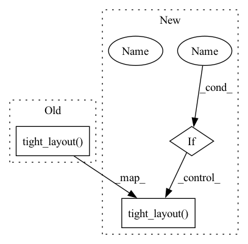

Pattern ID :10202

Before Change
facet_kws={"sharey": False, "sharex": False}
)
ax.set_xticklabels(rotation=45)
plt.tight_layout()
return ax
After Change
colors = [palettes]
custom_palette = sns.set_palette(sns.color_palette(colors))
if use_orbit_style:
with plt.style.context(orbit_style):
ax = sns.relplot(x=date_col, y="value", col="variable",
height=height, aspect=aspect,
col_wrap=col_wrap, kind="line", data=df_long,
palette=custom_palette,
facet_kws={"sharey": False, "sharex": False}
)
ax.set_xticklabels(rotation=45)
plt.tight_layout()
else:
ax = sns.relplot(x=date_col, y="value", col="variable",
height=height, aspect=aspect,
col_wrap=col_wrap, kind="line", data=df_long,
facet_kws={"sharey": False, "sharex": False}
)
ax.set_xticklabels(rotation=45)
plt.tight_layout()
return ax
In pattern: SUPERPATTERN
Frequency: 5
Non-data size: 3
Instances
Fragment ID: 36002901
Project Name: uber/orbit
Commit Name: 18b252e6f30a10a767cb62bf2265402a90277027
Time: 2021-08-12
Author: ariel.jiang@uber.com
File Name: orbit/eda/eda_plot.py
M Class Name: AnonimousClass
N Class Name: AnonimousClass
M Method Name: wrap_plot_ts(8)
N Method Name: wrap_plot_ts(6)
M Parent Class:
N Parent Class:
M File Name: orbit/eda/eda_plot.py
N File Name: orbit/eda/eda_plot.py
M Start Line: 250
M End Line: 256
N Start Line: 282
N End Line: 323
'>
Before Change
fig = plt.figure()
plt.imshow(superimposed_img)
plt.axis("off")
plt.tight_layout()
return superimposed_img, heatmap, preds
def matmul_prod(aa):
After Change
if model.output_shape[-1] == 1000:
print(">>>> Prediction:", tf.keras.applications.imagenet_utils.decode_predictions(preds)[0])
print(">>>> Top 5 prediction indexes:", np.argsort(preds[0])[-5:])
if plot:
fig = plt.figure()
plt.imshow(superimposed_img)
plt.axis("off")
plt.tight_layout()
return superimposed_img, heatmap, preds
def matmul_prod(aa):
'>
Fragment ID: 36002900
Project Name: leondgarse/keras_cv_attention_models
Commit Name: 047bc7bb8b5a4c02a9cc6ac08b08cae72c7da9f3
Time: 2022-01-02
Author: leondgarse@gmail.com
File Name: keras_cv_attention_models/visualizing/visualizing.py
M Class Name: AnonimousClass
N Class Name: AnonimousClass
M Method Name: make_and_apply_gradcam_heatmap(7)
N Method Name: make_and_apply_gradcam_heatmap(6)
M Parent Class:
N Parent Class:
M File Name: keras_cv_attention_models/visualizing/visualizing.py
N File Name: keras_cv_attention_models/visualizing/visualizing.py
M Start Line: 175
M End Line: 180
N Start Line: 154
N End Line: 183
'>
Before Change
plt.title("Joint histogram\nFast Marching vs. FastGeodis")
// plt.gca().set_aspect("equal", adjustable="box")
plt.tight_layout()
plt.show()
if __name__ == "__main__":
After Change
def demo_geodesic_distance3d():
SHOW_JOINT_HIST = False
input_name = "data/img3d.nii.gz"
img = sitk.ReadImage(input_name)
I = sitk.GetArrayFromImage(img)
spacing_raw = img.GetSpacing()
spacing = [spacing_raw[2], spacing_raw[1], spacing_raw[0]]
I = np.asarray(I, np.float32)
I = I[18:38, 63:183, 93:233]
S = np.zeros_like(I, np.uint8)
S[10][60][70] = 1
t0 = time.time()
D1 = GeodisTK.geodesic3d_fast_marching(I, S, spacing)
t1 = time.time()
D2 = geodistk_geodesic_distance_3d(I, S, spacing, 1.0, 4)
dt1 = t1 - t0
dt2 = time.time() - t1
It = torch.from_numpy(I).unsqueeze_(0).unsqueeze_(0)
St = torch.from_numpy(1 - S.astype(np.float32)).unsqueeze_(0).unsqueeze_(0)
D3 = np.squeeze(
FastGeodis.generalised_geodesic3d(
It, St, spacing, 1e10, 1.0, 4
).numpy()
)
print("runtime(s) fast marching {0:}".format(dt1))
print("runtime(s) raster scan {0:}".format(dt2))
img_d1 = sitk.GetImageFromArray(D1)
img_d1.SetSpacing(spacing_raw)
sitk.WriteImage(img_d1, "data/image3d_dis1.nii.gz")
img_d2 = sitk.GetImageFromArray(D2)
img_d2.SetSpacing(spacing_raw)
sitk.WriteImage(img_d2, "data/image3d_dis2.nii.gz")
img_d3 = sitk.GetImageFromArray(D3)
img_d3.SetSpacing(spacing_raw)
sitk.WriteImage(img_d3, "data/image3d_dis3.nii.gz")
I_sub = sitk.GetImageFromArray(I)
I_sub.SetSpacing(spacing_raw)
sitk.WriteImage(I_sub, "data/image3d_sub.nii.gz")
I = I * 255 / I.max()
I = np.asarray(I, np.uint8)
I_slice = I[10]
D1_slice = D1[10]
D2_slice = D2[10]
D3_slice = D3[10]
plt.figure(figsize=(15, 5))
plt.subplot(1, 5, 1)
plt.imshow(I_slice, cmap="gray")
plt.autoscale(False)
plt.plot([70], [60], "ro")
plt.axis("off")
plt.title("(a) Input image")
plt.subplot(1, 5, 2)
plt.imshow(D1_slice)
plt.axis("off")
plt.title("(b) Fast Marching")
plt.subplot(1, 5, 3)
plt.imshow(D2_slice)
plt.axis("off")
plt.title("(c) GeodisTK")
plt.subplot(1, 5, 4)
plt.imshow(D3_slice)
plt.axis("off")
plt.title("(d) FastGeodis")
diff = D1 - D3
diff_slice = diff[10]
plt.subplot(1, 5, 5)
plt.imshow(diff_slice)
plt.axis("off")
plt.title(
"(d) Fast Marching \nvs. FastGeodis\nmax diff: {}\nmin diff: {}".format(
np.max(diff), np.min(diff)
)
)
plt.show()
if SHOW_JOINT_HIST:
plt.figure()
plt.subplot(1, 2, 1)
plt.hist2d(D1.flatten(), D2.flatten(), bins=50)
plt.xlabel("Fast Marching")
plt.ylabel("GeodisTK")
plt.title("Joint histogram\nFast Marching vs. GeodisTK")
// plt.gca().set_aspect("equal", adjustable="box")
plt.subplot(1, 2, 2)
plt.hist2d(D1.flatten(), D3.flatten(), bins=50)
plt.xlabel("Fast Marching")
plt.ylabel("FastGeodis")
plt.title("Joint histogram\nFast Marching vs. FastGeodis")
// plt.gca().set_aspect("equal", adjustable="box")
plt.tight_layout()
plt.show()
if __name__ == "__main__":
'>
Fragment ID: 36002902
Project Name: masadcv/fastgeodis
Commit Name: 4049eafb57a41e1192e8711b6cae332d09e57a90
Time: 2022-06-25
Author: muhammad.asad@kcl.ac.uk
File Name: samples/demo3d.py
M Class Name: AnonimousClass
N Class Name: AnonimousClass
M Method Name: demo_geodesic_distance3d(0)
N Method Name: demo_geodesic_distance3d(0)
M Parent Class:
N Parent Class:
M File Name: samples/demo3d.py
N File Name: samples/demo3d.py
M Start Line: 114
M End Line: 130
N Start Line: 30
N End Line: 133
'>
Before Change
ax2.set_ylabel("variance", color="blue")
ax2.tick_params(axis="y", labelcolor="blue")
fig.tight_layout()
if show_plot:
plt.show()
After Change
ax.set_xlabel("Number of epoch")
ax.set_ylabel("Energy", color="black")
if var:
ax2 = ax.twinx()
ax2.plot(epoch, variance, color="blue")
ax2.set_ylabel("variance", color="blue")
ax2.tick_params(axis="y", labelcolor="blue")
fig.tight_layout()
if show_plot:
plt.show()
'>
Fragment ID: 36002899
Project Name: nlesc-jcer/qmctorch
Commit Name: 1a78e47f634b4821232acac330300eda9e3562c7
Time: 2020-03-10
Author: nicolas.gm.renaud@gmail.com
File Name: deepqmc/solver/plot_data.py
M Class Name: AnonimousClass
N Class Name: AnonimousClass
M Method Name: plot_observable(4)
N Method Name: plot_observable(3)
M Parent Class:
N Parent Class:
M File Name: deepqmc/solver/plot_data.py
N File Name: deepqmc/solver/plot_data.py
M Start Line: 50
M End Line: 55
N Start Line: 6
N End Line: 58
'>
Before Change
plt.title("Joint histogram\nFast Marching vs. FastGeodis (gpu)")
// plt.gca().set_aspect("equal", adjustable="box")
plt.tight_layout()
// plt.colorbar()
plt.show()
After Change
def evaluate_geodesic_distance2d(image, seed_pos):
SHOW_JOINT_HIST = False
// get image and create seed image
Image = np.asanyarray(image, np.float32)
Seed = np.zeros((Image.shape[0], Image.shape[1]), np.float32)
Seed[seed_pos[0]][seed_pos[1]] = 1
// run and time each method
iterations = 2
v = 1e10
lamb = 1.0
tic = time.time()
fastmarch_output = GeodisTK.geodesic2d_fast_marching(Image, Seed.astype(np.uint8))
fastmarch_time = time.time() - tic
tic = time.time()
geodistkraster_output = geodesic_distance_2d(
Image, Seed.astype(np.uint8), lamb, iterations
)
geodistkraster_time = time.time() - tic
if Image.ndim == 3:
Image = np.moveaxis(Image, -1, 0)
else:
Image = np.expand_dims(Image, 0)
device = "cpu"
It = torch.from_numpy(Image).unsqueeze_(0).to(device)
St = (
torch.from_numpy(1 - Seed.astype(np.float32))
.unsqueeze_(0)
.unsqueeze_(0)
.to(device)
)
tic = time.time()
fastraster_output_cpu = np.squeeze(
FastGeodis.generalised_geodesic2d(It, St, v, lamb, iterations).cpu().numpy()
)
fastraster_time_cpu = time.time() - tic
device = "cuda" if It.shape[1] == 1 and torch.cuda.is_available() else None
if device:
It = It.to(device)
St = St.to(device)
tic = time.time()
fastraster_output_gpu = np.squeeze(
FastGeodis.generalised_geodesic2d(It, St, v, lamb, iterations).cpu().numpy()
)
fastraster_time_gpu = time.time() - tic
print("Runtimes:")
print(
"Fast Marching: {:.6f} s \nGeodisTk raster: {:.6f} s \nFastGeodis CPU raster: {:.6f} s".format(
fastmarch_time, geodistkraster_time, fastraster_time_cpu
)
)
if device:
print("FastGeodis GPU raster: {:.6f} s".format(fastraster_time_gpu))
plt.figure(figsize=(18, 6))
plt.subplot(2, 4, 1)
plt.imshow(image, cmap="gray")
plt.autoscale(False)
plt.plot([seed_pos[0]], [seed_pos[1]], "ro")
plt.axis("off")
plt.title("(a) Input image")
plt.subplot(2, 4, 2)
plt.imshow(fastmarch_output)
plt.axis("off")
plt.title("(b) Fast Marching | ({:.4f} s)".format(fastmarch_time))
plt.subplot(2, 4, 3)
plt.imshow(fastraster_output_cpu)
plt.axis("off")
plt.title("(c) FastGeodis (cpu) | ({:.4f} s)".format(fastraster_time_cpu))
plt.subplot(2, 4, 6)
plt.imshow(geodistkraster_output)
plt.axis("off")
plt.title("(d) GeodisTK | ({:.4f} s)".format(geodistkraster_time))
if device:
plt.subplot(2, 4, 7)
plt.imshow(fastraster_output_gpu)
plt.axis("off")
plt.title("(e) FastGeodis (gpu) | ({:.4f} s)".format(fastraster_time_gpu))
diff = (
abs(fastmarch_output - fastraster_output_cpu) / (fastmarch_output + 1e-7) * 100
)
plt.subplot(2, 4, 4)
plt.imshow(diff)
plt.axis("off")
plt.title(
"(f) Fast Marching vs. FastGeodis (cpu)\ndiff: max: {:.4f} | min: {:.4f}".format(
np.max(diff), np.min(diff)
)
)
if device:
diff = (
abs(fastmarch_output - fastraster_output_gpu)
/ (fastmarch_output + 1e-7)
* 100
)
plt.subplot(2, 4, 8)
plt.imshow(diff)
plt.axis("off")
plt.title(
"(g) Fast Marching vs. FastGeodis (gpu)\ndiff: max: {:.4f} | min: {:.4f}".format(
np.max(diff), np.min(diff)
)
)
// plt.colorbar()
plt.show()
if SHOW_JOINT_HIST:
plt.figure(figsize=(14, 4))
plt.subplot(1, 3, 1)
plt.hist2d(fastmarch_output.flatten(), geodistkraster_output.flatten(), bins=50)
plt.xlabel("Fast Marching")
plt.ylabel("GeodisTK")
plt.title("Joint histogram\nFast Marching vs. GeodisTK")
// plt.gca().set_aspect("equal", adjustable="box")
plt.title("Joint histogram\nFast Marching vs. FastGeodis (cpu)")
plt.subplot(1, 3, 2)
plt.hist2d(fastmarch_output.flatten(), fastraster_output_cpu.flatten(), bins=50)
plt.xlabel("Fast Marching")
plt.ylabel("FastGeodis (cpu)")
// plt.gca().set_aspect("equal", adjustable="box")
if device:
plt.subplot(1, 3, 3)
plt.hist2d(fastmarch_output.flatten(), fastraster_output_gpu.flatten(), bins=50)
plt.xlabel("Fast Marching")
plt.ylabel("FastGeodis (gpu)")
plt.title("Joint histogram\nFast Marching vs. FastGeodis (gpu)")
// plt.gca().set_aspect("equal", adjustable="box")
plt.tight_layout()
// plt.colorbar()
plt.show()
'>
Fragment ID: 36002904
Project Name: masadcv/fastgeodis
Commit Name: 4049eafb57a41e1192e8711b6cae332d09e57a90
Time: 2022-06-25
Author: muhammad.asad@kcl.ac.uk
File Name: samples/demo2d.py
M Class Name: AnonimousClass
N Class Name: AnonimousClass
M Method Name: evaluate_geodesic_distance2d(2)
N Method Name: evaluate_geodesic_distance2d(2)
M Parent Class:
N Parent Class:
M File Name: samples/demo2d.py
N File Name: samples/demo2d.py
M Start Line: 148
M End Line: 171
N Start Line: 27
N End Line: 176